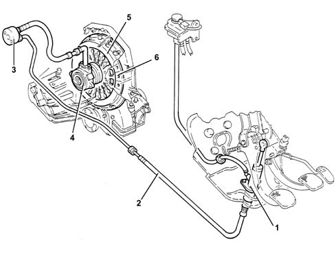
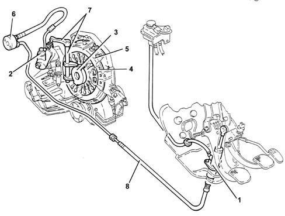

Introduction - CLUTCH
- Path
- Descriptions > 18 CLUTCH > Introduction - CLUTCH
- Kind
- system description
- Applies to
- engines: 1.6 TS , 1.8 TS, 2.0 JTS, 2.5 V6, 3.2 V6, 1.9 JTD 8v , 2.0 JTS, 2.4 JTD 10v; all production periods
- Interactive page
- https://sloeber94.github.io/elrnDB-a156/en/#/3239207
Applies to: engines: 1.6 TS , 1.8 TS, 2.0 JTS, 2.0 JTS; all production periods
The clutch is the dry, single plate hydraulically operated 'push' type with a coaxial cylinder fitted to the gearbox mainshaft.
DESCRIPTION
Introduction
The system consists of:
- a clutch pump (master cylinder) (1) fixed to the pedals which compresses the oil
- Hose (2) connecting pump and coaxial cylinder with quick-release fittings
- a pulse damper (3) fitted along the pipe
- a coaxial clutch control cylinder (4)
- a clutch drip tray (5) with diaphragm springs
- clutch plate (6) with flexible couplings
Operation
Pump (1) operated by the pedal , transmits pressure to the coaxial cylinder piston (4).
The piston acts directly on the pressure plate springs to detatch the clutch plate (6).
When the pedal is released, the action of the pressure plate springs returns the clutch disc in contact with the flywheel.

1, Clutch pump 2, Hose connecting pump and control cylinder 3, Pulse damper 4, Coaxial clutch control cylinder 5, Clutch drip tray 6, Clutch plate
Applies to: engines: 2.5 V6, 3.2 V6, 1.9 JTD 8v , 2.4 JTD 10v; all production periods
The clutch is the dry, single plate hydraulically operated type.
DESCRIPTION
Introduction
The system consists of:
- a clutch pump (master cylinder) (1) fixed to the pedals which compresses the oil
- a connecting pipe (8) between the pump and the clutch operating cylinder
- an impulse damper (6) in the pipe
- a clutch operating cylinder (2) fixed to the gearbox
- linkage (7) operating the thrust bearing (3)
- a thrust bearing (3)
- a clutch drip tray (5) with diaphragm springs
- a clutch plate (4); without springs on the 2.4 TD - 2.5 V6 (due to the adoption of a dual mass flywheel).
The hydraulic operation makes it possible to:
- reduce the transmission of vibrations to the passenger compartment due to the damping effect of the oil
- improve the gradualness of the engagement due to a constant adjustment of the clutch pedal setting
- decrease the operating load on the clutch pedal.
Operation
Pump (1) operated by the pedal , transmits the pressure to the operating cylinder piston (2).
The latter, acts on the operating linkage (7) which "pulls" the thrust bearing (3) overcoming the action of the pressure plate springs.
As a result, the clutch disc (4) is uncoupled from the flywheel.
When the pedal is released, the action of the pressure plate springs returns the clutch disc in contact with the flywheel.

1, Clutch pump 2, Clutch operating cylinder 3, Thrust bearing 4, Clutch plate 5, Clutch drip tray 6, Impulse damper 7, Linkage 8, Connecting pipe between pump and cylinder